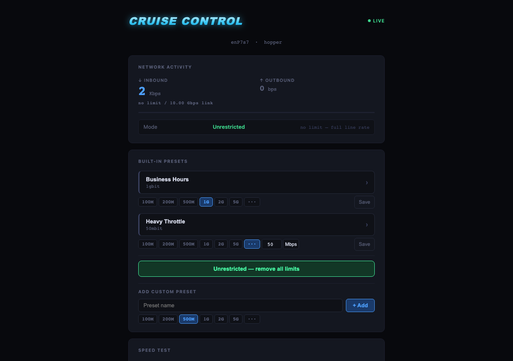
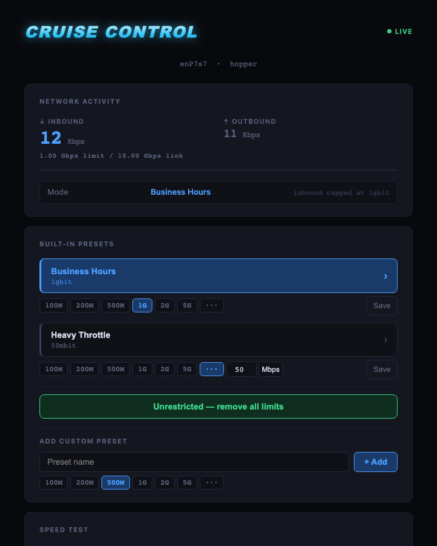
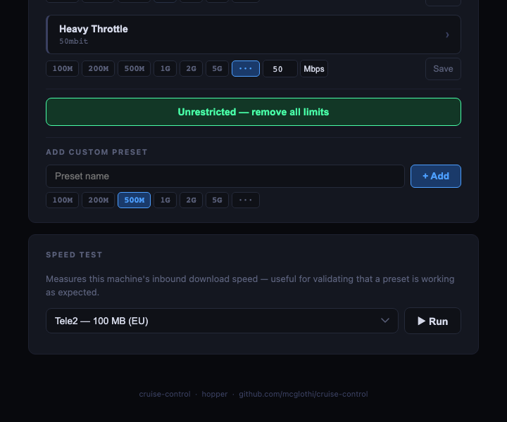

Inbound bandwidth throttle for GB10-class machines. Browser-based presets, instant apply, live RX/TX display — no SSH required after install.
tc + IFB —
the only way to actually cap model download speeds.
Egress-only tools don't work here.
ExecStop removes all tc rules on service stop.
A crash or reboot never leaves a stale rate limit in place.
Linux tc can only queue egress natively. Model downloads are ingress.
Cruise Control bridges this with IFB — a kernel virtual interface that
redirects inbound packets to an egress queue where HTB can shape them.
/opt/cruise-control/config.json and
is preserved across upgrades. Set THROTTLE_IFACE in
/etc/systemd/system/cruise-control.service for non-default interfaces.


